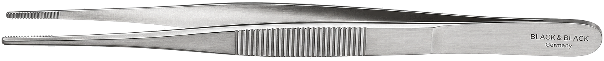
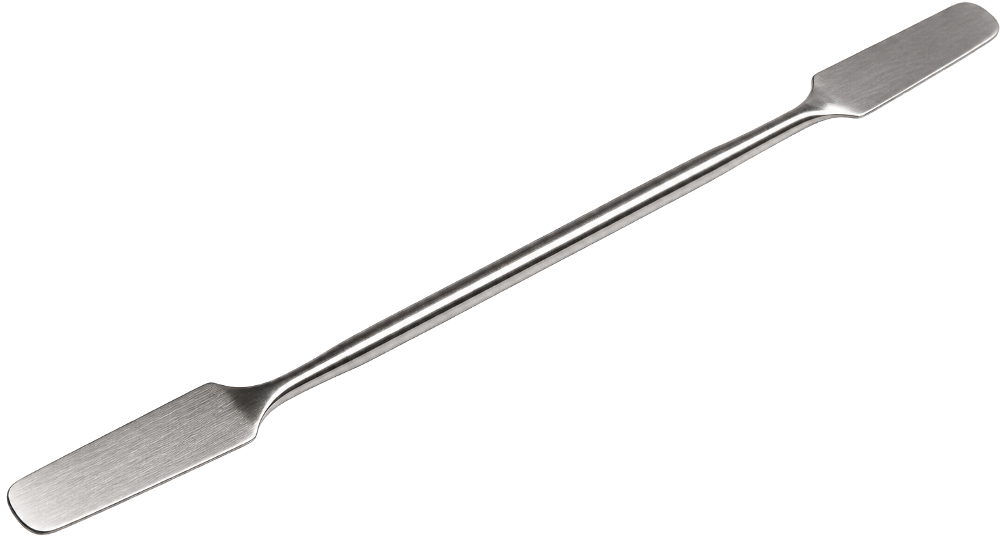

Experiment 1 · Filter Paper
Filter papers left: 3
1. Apparatus
2. Moisten paper
3. Add crystals
4. Connect & run
Study the real apparatus on the bench, then press Begin experiment.
×






20 V
Higher voltage → faster migration.
Polarity
Observation · moist filter paper on slide
+ anode
− cathode
What you see
OffChoose a crystal, set the voltage, then switch on the d.c. supply.
Key idea
In an electric field, coloured ions migrate: anions toward the anode (+), cations toward the cathode (−). The blurry streak is the trail of the moving coloured spot on the moist paper.
Notes
- Note 1: If the paper is not connected to d.c. supply, the purple color patch will diffuse to all directions.
- Note 2: To speed up the experiment, higher voltage can be applied.
Experiment 2 · U-tube
Animation Speed:
d.c. supply
20 V
Electrodes
Carbon (graphite)
Real-time 2D Active Lab
Anode — Red
Cathode — Green
Power & Terminals
20 V d.c.Anode (+)
Left arm
Attracts anions (−)
Cathode (−)
Right arm
Attracts cations (+)
Observations
IdleAnode region (left)
Cathode region (right)
Key idea
In an electric field, cations migrate to the cathode (−) and anions migrate to the anode (+). The movement of coloured ions shows that ions are charged particles that can move through the electrolyte.
Gel composition
Gel containing copper(II) ions and dichromate ions